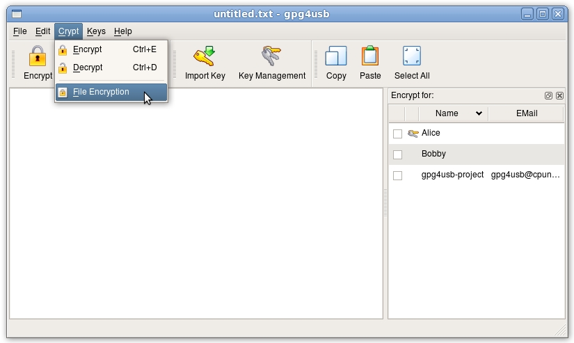
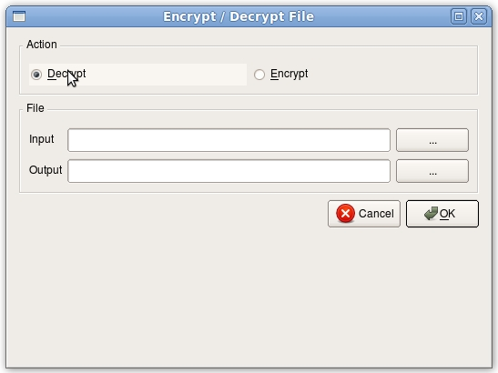
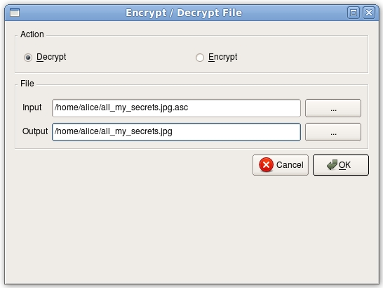
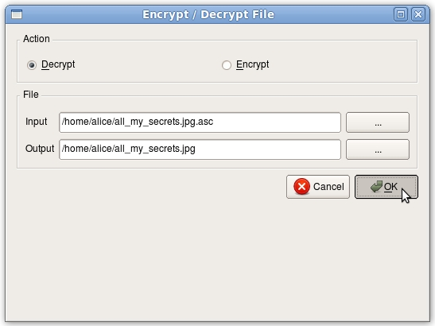
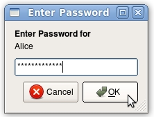

NOTE: You can only decrypt files, if you have one private key, the file is encrypted for. You can identify the private keys by the "bunch of keys"-image in front of the name in the keylist (in this case Bobby):
There are five steps to decrypt a file. We assume, that Alice wants to decrypt a file, which is encrypted for her (that is, while encrytion her key was chosen).
First Alice chooses the file cryption dialog in the menu. Alternatively, she could just hit the "File-Cryption"-button in the toolbar.

Secondly she chooses decrypt.

Now she chooses the input- and outputfile. The inputfile has to be the encrypted file

Now she hits the ok-button

Now she enters the passphrase of her key and hits the ok-button.

Afterwards the ok-message is displayed.